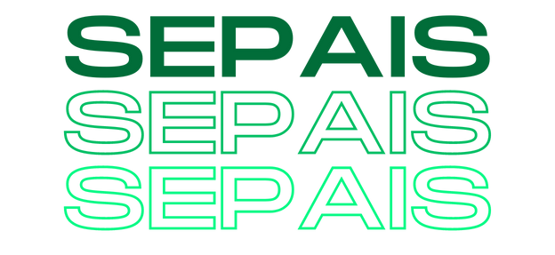

Lucas Garzuze Cordeiro, Pietro F. A. Sotile e Victor H. R. Macharete
Orientador: Prof. Dr. Eduardo Tieppo
Lacuna de Pesquisa
- Falta de segurança
- Demora para autorização da saída
- Sobrecarga dos servidores da SEPAE e da portaria
Objetivo Geral
Criar um sistema que gerencie a entrada e saída de alunos
Objetivos Específicos
- Criar uma ferramenta que funcione como um canal de comunicação entre a SEPAE e os pais.
- Possibilitar um trabalho mais dinâmico por parte da SEPAE e da PORTARIA
- Elaborar uma função que notifique os pais dos horários da saída dos alunos
- Criar um sistema de controle das faltas justificadas
Metódo Principal
- Para os usuários SEPAE e PORTARIA: site desktop, baseado em Django (inclui HTML, CSS e JS)
- Para os usuários PAIS DOS ALUNOS: aplicativo feito em Dart (framework flutter)